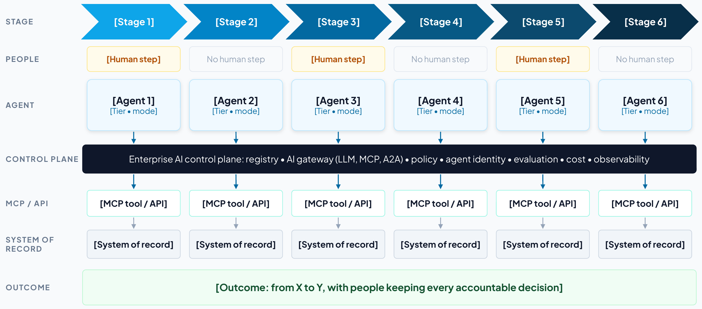
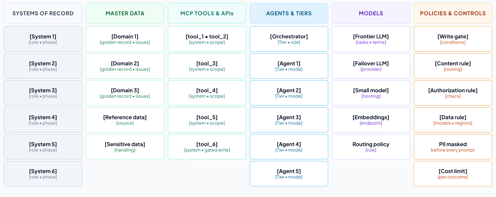
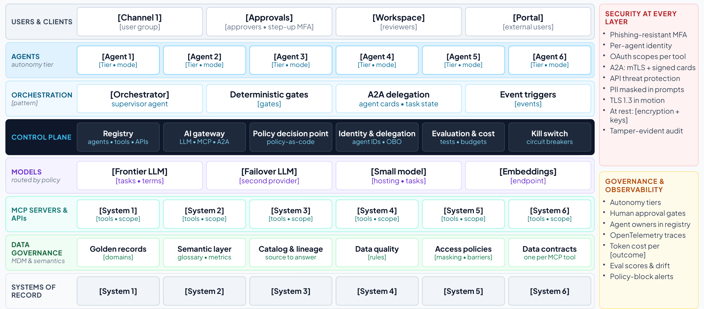
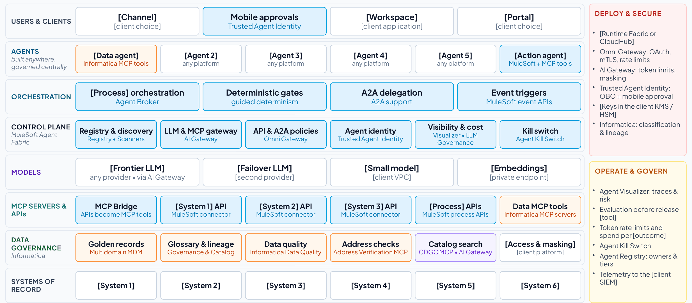

Section 7
The templates and how to use them
Fill the templates in the order of the six steps. Replace every bracketed prompt, add rows as needed, and keep an owner and a date against anything the client has confirmed.
Download the templates as a Word document : Part 1 has these templates blank, and Part 2 has them filled in for use case 1. Appendix G describes the document.
| Template | Name | Step | Owner | Feeds |
|---|---|---|---|---|
| T1 | Use case at a glance | Frame | Engagement lead and the business owner |
|
| T2 | Business case and value hypothesis | Frame | Engagement lead and finance | Deck: The value at stake. Report: section 4 |
| T3 | Asset inventory (T3a to T3h) | Discover | Lead architect with the owners |
|
| T4 | Requirements register | Define | Lead architect with the business owner | Deck: Requirements. Report: section 5 and appendix |
| T5 | Security and compliance requirements | Define | Lead architect with the CISO | Deck: Security. Report: section 6 |
| T6 | KPIs and scorecard | Discover and phase | Engagement lead and lead architect with finance | Deck: KPIs at every milestone. Report: sections 4 and 11 |
| T7 | North-star architecture (vendor-neutral) | Design | Lead architect with the enterprise architect | Deck: Vendor-neutral architecture. Report: section 7 |
| T8 | A day in the life | Design | Lead architect with a user | Deck: A day in the life. Report: section 8 |
| T9 | How the components work together | Design | Lead architect | Deck: Component interaction. Report: section 8 |
| T10 | Realizing the use case with MuleSoft Agent Fabric and Informatica | Design | Lead architect with specialists |
|
| T11 | Phased implementation: ROI and business value at every milestone | Phase | Engagement lead and lead architect with finance |
|
| T12 | Decisions, risks and next steps | Decide | Engagement lead | Deck: Decisions. Report: section 12 |
| T13 | Operating model and adoption plan | Phase and decide | Engagement lead, the sponsor and HR | Deck: Operating model. Report: sections 10 and 12 |
T1. Use case at a glance
How to use T1
Purpose. Describe the use case on one page, in the client’s words, so everyone agrees what is in and out of scope.
When. Step 1 (frame), updated after discovery.
Who. The engagement lead drafts it with the business owner, and the lead architect adds the stages and systems.
How to fill it
- Name the use case after its business outcome, for example “Engagement launch: from verbal win to ready-to-charge.”
- Write the problem today and the target state in two or three sentences each.
- Fill the trigger, end state, users, systems of record and out-of-scope rows.
- List five to seven stages. For each, record the human step, the work mode (human-led, AI-assisted or AI-led) and why, the agent and its tier, and the system of record.
- Write three to five business goals and the control-plane goals, each with the KPI that measures it.
- Score the use case against the seven selection criteria, with evidence.
Tips
- Keep it to one page and leave the detail to the other templates.
- If you cannot name the end state, the scope is not ready.
- Ask could AI and should AI of every stage (Section 2). A human-led step needs a reason the risk team would accept.
Feeds. Client deck: The use case; At a glance. Client report: sections 1 and 2.
| Use case | [Name, after its business outcome] |
| Client and business unit | [Client, business unit] |
| Executive sponsor | [Name, title] |
| Business owner | [Name, title] |
| Problem today | [The chain of manual, risk-sensitive steps and what the delays and errors cost] |
| Target state | [What agents do, what people keep, which systems are involved] |
| Trigger | [Event that starts the process] |
| End state | [What is true when it is done] |
| Users | [User groups] |
| Systems of record | [Systems the process runs on] |
| Out of scope | [What the first phase excludes] |
Stages
| Stage | Human step | Work mode | Agent and tier | System of record |
|---|---|---|---|---|
| [Stage name] | [Decision or none] | [Human-led, AI-assisted or AI-led; why] | [Agent (Tier n, mode)] | [System] |
Goals
| Goal | Type | Measured by |
|---|---|---|
| [Goal] | [Business or control plane] | [KPI] |
Selection scores
| Criterion | Score (1–5) | Evidence |
|---|---|---|
| Value at stake | ||
| Visible pain | ||
| Reachable systems | ||
| Data readiness | ||
| Safe first step | ||
| Measurable in 90 days | ||
| Sponsor and owner | ||
| Total (out of 35) |

T2. Business case and value hypothesis
How to use T2
Purpose. State the value at stake as a few levers with formulas that the business owner and finance can check.
When. Step 1 (frame) as a hypothesis, then step 5 (phase) with measured baselines.
Who. The engagement lead, with the business owner and the finance partner.
How to fill it
- Pick the levers that apply: capacity, revenue, utilization, cost avoided, risk avoided.
- For each, write how the solution delivers it and the formula with its inputs.
- Take inputs from the client (volumes, rates, loaded costs) and record their source.
- Mark each lever’s confidence (high, medium, low) and what would raise it.
- Total the run rate at full scale, before platform, model and change costs.
- Record every assumption and who agreed it.
- Set the total against the published payback benchmarks (Section 6), with separate horizons for generative and agentic slices.
Tips
- Prefer a conservative, checkable figure to a large, vague one.
- Describe risk avoided in words and evidence unless the client has its own number.
Feeds. Client deck: The value at stake, Value arrives at every milestone. Client report: section 4.
| Value lever | How the solution delivers it | Formula and inputs | Annual value (illustrative) | Confidence |
|---|---|---|---|---|
| Capacity released | [How] | [Volume × unit × value] | [$] | [H, M or L] |
| Revenue protected or accelerated | [How] | [Volume × unit × value] | [$] | [H, M or L] |
| Utilization and throughput | [How] | [Volume × unit × value] | [$] | [H, M or L] |
| Cost avoided | [How] | [Volume × unit × value] | [$] | [H, M or L] |
| Risk avoided | [How] | [Volume × unit × value] | [$] | [H, M or L] |
| Assumption | Value | Source | Agreed by |
|---|---|---|---|
| [Volume, rate or cost] | [Value] | [System or person] | [Name, date] |
| Run rate at full scale | [About $X a year released or protected, before platform, model and change costs] |
| Costs | [From the project team’s estimate: platform, implementation, model usage, change] |
| Expected business outcomes | [Three to five outcomes in the sponsor’s words] |
| Payback benchmark | Typical AI payback is two to four years, against seven to 12 months for other technology investments82 |
| Horizons | [Which slices are judged in months (read-only, drafting) and which on a longer horizon (agents acting in systems of record)] |
T3. Asset inventory
How to use T3
Purpose. Record every asset the use case touches, who owns it, how it is controlled today and when the plan needs it.
When. Step 2 (discover), updated through design.
Who. The lead architect, confirmed row by row with each owner.
How to fill it
- Start from the data request and the process walkthrough, and add one row per asset.
- Fill T3a to T3h in turn: systems, data, tools, agents, models, identities, policies, infrastructure.
- For every agent, record an owner, a sponsor, a tier and a status (live, pilot, planned or shadow), its lifecycle stage and next recertification, and any native control plane that already governs it.
- For every tool and system, record read or write access and whether it exists today or must be built.
- Add the phase in which each asset is needed.
- Turn every unknown into an open question in T12.
Tips
- Run Agent Scanners where the client allows. It finds agents and MCP servers people forget.
- “Not enforced today” is a valuable entry, because that is where the control plane adds value first.
Feeds. Client deck: Discovery; Asset inventory. Client report: section 3 and the appendix.
T3a. Applications and systems of record
| System | Owner | Role in the use case | Interfaces | Agent access | Phase |
|---|---|---|---|---|---|
| [System] | [Team] | [What it does in the process] | [API, event, file] | [Read or write] | [1–4] |
T3b. Data assets and master data
| Data asset | System of record | Golden record today? | Quality and risk notes | Sensitivity | Owner or steward |
|---|---|---|---|---|---|
| [Domain or data set] | [System] | [Yes, partly, no] | [Issues] | [Class] | [Name or team] |
T3c. Integrations, APIs, events and MCP tools
| Tool or interface | System | Operation | Scope | Exists or to build | Used by |
|---|---|---|---|---|---|
| [tool_name] | [System] | [What it does] | [Read or write] | [Exists or to build] | [Agent] |
T3d. Agents and copilots
| Agent | Responsibility | Tier | Human role | Owner | Status and phase |
|---|---|---|---|---|---|
| [Agent] | [What it does] | [Tier, mode] | [Who decides] | [Team] | [Live, pilot, planned, shadow; phase] |
| Agent | Sponsor | Lifecycle stage | Next recertification | Retirement criteria | Native control plane |
|---|---|---|---|---|---|
| [Agent] | [Name] | [Propose to retire] | [Date] | [When it is retired] | [Agent 365, AgentCore or none] |
T3e. Models
| Model | Provider and hosting | Tasks | Data rules | Fallback |
|---|---|---|---|---|
| [Model] | [Provider; SaaS, VPC or on premises] | [Tasks] | [Retention, regions, masking] | [Fallback] |
T3f. Identities, users and channels
| Actor | Channel | Authentication | Authority and approvals |
|---|---|---|---|
| [User group or agent] | [Channel] | [SSO, MFA, step-up] | [What they may approve] |
T3g. Policies and controls
| Policy or control | Type | Enforced today | Target enforcement | Owner |
|---|---|---|---|---|
| [Rule] | [Gate, data, limit, regulatory] | [Where, or not enforced] | [Where it will be enforced] | [Team] |
T3h. Infrastructure, runtime and observability
| Component | Notes |
|---|---|
| [Environment, network zone, keys, logging, residency] | [Constraint or decision] |

T4. Requirements register
How to use T4
Purpose. Record what the solution must do and the conditions it must meet, each traceable to a KPI and a phase.
When. Step 3 (define), refined in design.
Who. The lead architect, accepted by the business owner and the relevant client owners.
How to fill it
- Use the prefixes BR, FR, DR, IR, NFR, SR, CR and OR (Section 4).
- Write each requirement with a measurable acceptance test.
- Set a priority (Must, Should, Could, Won’t) and the phase in which it must be met.
- Link each requirement to the KPI it moves or protects.
- Name an owner who can accept it.
- Include the operational requirements the control plane needs: evaluation before promotion and on sampled production traces, cost attribution by owner and use case, and a takeover runbook for any agent at tier 3 or above (Section 4).
Tips
- A short register the client owns is more useful than a long one nobody reads. For one use case, 20 to 30 rows is typical.
- Write identity requirements to the vendor-neutral checklist in Section 4: a unique identity per agent, authority that narrows at each hop, no static keys and real-time revocation.
- Fill the control-ID column only when compliance asks for it, from the crosswalk in Section 4 (ISO/IEC 42001, NIST AI RMF, EU AI Act).
Feeds. Client deck: Requirements. Client report: section 5 and the appendix.
| ID | Type | Requirement and acceptance test | Priority | KPI | Phase | Owner | Control ID |
|---|---|---|---|---|---|---|---|
| [BR-01] | [Type] | [Requirement; how it will be tested] | [Must] | [KPI] | [1–4] | [Owner] | [If asked] |
T5. Security and compliance requirements
How to use T5
Purpose. Set the controls for every layer, the autonomy tier for every agent and the evidence each obligation requires.
When. Step 3 (define), with the requirements and security workshop.
Who. The lead architect with the client’s CISO or security architect and risk and compliance.
How to fill it
- For each of the nine layers, write the controls the use case needs (Section 4 lists the questions to ask).
- Record what enforces each control in the realization, and in which phase.
- Give every agent a tier, a human role, the approvals bound to its actions and its limits.
- List each regulatory or professional obligation with the evidence it requires and where that evidence is produced.
- Map the design to the OWASP agentic risks (ASI01 to ASI10) and name an owner for every gap (Section 4).
- For every agent above tier 1, record the evidence it needs for promotion and the events that demote it automatically.
- For every agent at tier 3 or above, write the takeover runbook: who takes over, with what information, and how the process continues.
- If compliance asks, add control IDs from ISO/IEC 42001, the NIST AI RMF or the EU AI Act.
Tips
- Only a few agents should ever write to a system of record, and those writes need bound, time-limited approvals and a drilled kill switch.
- Turn the 2026 protocol changes into controls: the registry verifies signed agent cards (A2A 1.0), and the gateway applies policy on MCP’s standard request headers and joins every call to its trace.26,27
Feeds. Client deck: Security. Client report: section 6.
| Layer | Requirement (controls) | Enforced by | Control IDs | Phase | Owner |
|---|---|---|---|---|---|
| Users | |||||
| Agents | |||||
| A2A | |||||
| MCP | |||||
| APIs | |||||
| Models | |||||
| Data at rest | |||||
| Data in motion | |||||
| Audit |
Autonomy by agent
| Agent | Tier | Human role | Approval bound to | Limits and kill switch |
|---|---|---|---|---|
| [Agent] | [Tier] | [Who decides] | [Action and validity] | [Limits] |
Promotion and demotion
| Agent | Current tier | Evidence to promote | Demotion triggers |
|---|---|---|---|
| [Agent] | [Tier] | [Evaluations, red-team findings, impact assessment, sign-off] | [Security event, failed binding check, stale data, lost sponsor] |
Human takeover
| Agent | Who takes over | Information handed over | Degraded mode and service level | Last drill |
|---|---|---|---|---|
| [Agent at tier 3 or above] | [Named team] | [Trace, pending actions and approvals, data touched] | [Manual or deterministic; service level] | [Date] |
Threat coverage
| OWASP agentic risk | Controls in this design | Residual gap and owner |
|---|---|---|
| ASI01 Agent Goal Hijack | ||
| ASI02 Tool Misuse | ||
| ASI03 Identity & Privilege Abuse | ||
| ASI04 Agentic Supply Chain Vulnerabilities | ||
| ASI05 Unexpected Code Execution | ||
| ASI06 Memory & Context Poisoning | ||
| ASI07 Insecure Inter-Agent Communication | ||
| ASI08 Cascading Failures | ||
| ASI09 Human-Agent Trust Exploitation | ||
| ASI10 Rogue Agents |
Compliance and evidence
| Obligation | Control ID | Evidence required | Where it is produced | Owner |
|---|---|---|---|---|
| [Regulation or standard] | [Clause or control] | [Evidence] | [System or log] | [Team] |
T6. KPIs and scorecard
How to use T6
Purpose. Define how success is measured: a baseline and a target at every milestone for each KPI, with its source and owner.
When. Step 2 (discover) for baselines and step 5 (phase) for milestone targets.
Who. The engagement lead and the lead architect, with the business owner and finance.
How to fill it
- Define each KPI precisely: what is counted, from which event to which, in which scope.
- Record the data source and the owner who reports it.
- Measure the baseline in the phase 1 scope, and write “not measured” where there is no data yet.
- Set a target for months 3, 8, 12 and 24 in line with the phasing (T11).
- Keep the control-plane KPIs: agent quality, governed AI traffic, AI cost per outcome and AI cost visibility.
- Give each scorecard metric a leading indicator from the library below, defined so that every team computes it the same way, and measure value instead of adoption.
Tips
- Month 3 targets apply to the first slice only. Say “in scope” so no one reads them as enterprise-wide.
Feeds. Client deck: The value at stake, KPIs at every milestone. Client report: sections 4 and 11.
| KPI | Definition | Data source | Owner |
|---|---|---|---|
| [KPI] | [What is counted, from when to when] | [System] | [Owner] |
| Agent quality | Evaluation pass rate for the agents’ key outputs | [Evaluation tool] | [Owner] |
| Governed AI traffic | Share of model and tool calls through the AI gateway | AI Gateway | [Owner] |
| AI cost per [outcome] | Model and platform cost per outcome |
| [Owner] |
| AI cost visibility | Share of model and tool spend attributed to an owner and a use case within a day |
| [Owner] |
| KPI | Baseline | Month 3 | Month 8 | Month 12 | Month 24 |
|---|---|---|---|---|---|
| [KPI] | [Baseline] | [In scope] | [Target] | [Target] | [Target] |
| Agent quality | Not measured | Baseline set | [Track] | [Target] | [Target] |
| Governed AI traffic | Not measured | 100% in scope | 100% in scope | 100% | 100% |
| AI cost per [outcome] | Not measured | Baseline set | Within target | Within target | Within target |
| AI cost visibility | Not measured | 100% in scope | 100% in scope | 100% | 100% |
Control-plane scorecard
| Metric | Definition | Direction | Data source |
|---|---|---|---|
| Agent coverage | Share of known agents registered with an owner and a risk tier | Up | Agent Registry and Scanners |
| Governed traffic | Share of LLM and MCP calls routed through the AI gateway | Up | AI Gateway |
| Cost per outcome | Model spend per resolved task, by use case | Down |
|
| AI cost visibility | Share of model and tool spend attributed to an owner and a use case within a day, and share of agents under a token-based rate limit | Up |
|
| Value realized | Run-rate value of live use-case slices against their business cases, agreed with finance | Up |
|
| Policy enforcement | Violations blocked before impact versus found afterward, including exposure-limit breaches refused by a custom aggregate-risk policy where one is in place | Up |
|
| Time to contain | Minutes from alert to kill switch or credential revocation, and to open work handed to a named person | Down |
|
| Evaluation pass rate | Agents meeting quality thresholds before promotion | Up | Evaluation runs (any evaluation tool) |
| Oversight coverage | Share of tier 3–4 high-risk actions with approval or audit | Up |
|
| Oversight effectiveness | Share of high-risk actions executed exactly as approved and within the approval’s validity window, with drills showing people can stop an agent in time | Up |
|
| Crypto readiness | Share of the asymmetric-crypto inventory with a migration plan | Up | Cryptographic inventory |
Leading indicators (KPI library)
| Scorecard metric | Leading indicator | How to measure it |
|---|---|---|
| Agent coverage | Unregistered agents found | Agents found by scanners but not yet registered, and days from discovery to registration |
| Governed traffic | New agents launched behind the gateway | Share of newly promoted agents whose first production call went through the gateway |
| Cost per outcome | Cost per successful task | Model and tool spend divided by tasks that passed their success check, by use case60 |
| AI cost visibility | Spend attributed within a day | Share of the previous day’s model and tool spend tagged to an owner and a use case |
| Value realized | Acceptance rate | Share of agent outputs accepted without significant edits, with undo and revert counted as rejections60 |
| Policy enforcement | Near misses | Calls blocked per 1,000, by policy, and their trend, with exposure-limit refusals counted separately |
| Time to contain | Drill time | Minutes to stop an agent and hand its open work to a named person in the latest drill |
| Evaluation pass rate | Trajectory quality | Tool-selection accuracy and plan adherence on sampled production traces60 |
| Oversight coverage | Verification latency | Time from an agent completing a task to a person approving it.60 Very short times can mean approval without review. |
| Oversight effectiveness | Takeover rate | How often a person has to step in and take over a task the agent started60 |
| Crypto readiness | Algorithm agility | Share of gateways and service meshes that can change algorithms by configuration |
T7. North-star architecture (vendor-neutral)
How to use T7
Purpose. Show what good looks like for this use case, layer by layer, before any product is named.
When. Step 4 (design), in the architecture workshop.
Who. The lead architect with the client’s enterprise architect.
How to fill it
- Start from the north star in Figure 2 (handbook Figure 4) and the asset inventory (T3).
- Fill each layer with the use case’s channels, agents and tiers, orchestration, models, tools, data governance and systems of record.
- Record the design decisions and their rationale.
- Check the design rule: every agent-to-model and agent-to-tool call passes the control plane.
- Name only the systems of record and keep everything else vendor-neutral.
- Run the design-review checklist with the enterprise architect, against the framework the client already uses (Section 5).
Feeds. Client deck: Vendor-neutral architecture. Client report: section 7.
| Layer | What goes here | This use case |
|---|---|---|
| Users and channels | Who uses the solution, through which channel, with which authentication | |
| Agents and tiers | Each agent with its tier and mode (read-only, drafts, proposes, gated writes) | |
| Orchestration | The pattern (embedded, dedicated or hybrid/federated), the orchestrator, the deterministic gates and the triggers | |
| Control plane | Registry, AI gateway (LLM, MCP, A2A), policy decision point, identity and delegation, evaluation and cost, kill switch | |
| Models | Frontier, private and embedding models, and the routing policy | |
| MCP servers and APIs | The capabilities exposed as governed tools, with read or write scopes | |
| Data governance | Golden records, semantic layer and data contracts, catalog and lineage, quality, access policies | |
| Systems of record | The named systems the process runs on | |
| Across every layer |
|
Design decisions
| Decision | Options | Choice and rationale |
|---|---|---|
| Orchestration pattern |
| |
| Model hosting and routing |
| |
| Where gateways and MCP servers run | CloudHub (MuleSoft-managed) or customer-managed Runtime Fabric | |
| Data residency and sovereignty | Regions, private links, customer-managed keys | |
| Human approvals and tiers | Which actions need a person, and how approvals are bound and expire | |
| Observability and audit | OpenTelemetry traces, SIEM, retention |
Design review checklist
| Check | Framework | Yes, partly or no | Evidence |
|---|---|---|---|
| Every agent has an owner, a sponsor, a risk tier and an identity of its own |
| ||
| Each agent’s tool access is least-privilege and allow-listed | Well-Architected Agentic AI Lens | ||
| Human oversight matches the risk and reversibility of each action | Well-Architected Agentic AI Lens | ||
| Agents’ data access is aligned with their users’ access | 20 questions | ||
| Only trusted, registered MCP and A2A servers are reachable | Cloud Adoption Framework | ||
| New policies start in audit mode, then enforce | Cloud Adoption Framework | ||
| Agent reasoning, tool calls and hand-offs are traced end to end |
| ||
| Agent costs are tagged to cost centers, with alerts as spend nears budget |
| ||
| Adversarial testing runs before release and on a schedule | Cloud Adoption Framework | ||
| There is a tested way to disable a misbehaving agent and hand over its work | Cloud Adoption Framework |

T8. A day in the life
How to use T8
Purpose. Make the architecture human: one persona, one realistic case, from trigger to end state.
When. Step 4 (design).
Who. The lead architect, checked with a real user.
How to fill it
- Choose a persona and a realistic case in the first phase’s scope.
- Write six to eight timestamped moments from the trigger to the end state.
- Show every human decision, and one moment where a control changes the outcome.
- End with the result in business terms.
Feeds. Client deck: A day in the life. Client report: section 8.
| Persona | [Name, role, team] |
| The case | [What happens and why it matters] |
| Time | Moment | What happens | Who decides |
|---|---|---|---|
| [hh:mm] | [Moment] | [What happens] | [Person or none] |
T9. How the components work together
How to use T9
Purpose. Trace the day in the life through the architecture: which components act, over which protocol, under which controls.
When. Step 4 (design).
Who. The lead architect.
How to fill it
- Use the same moments as T8.
- For each, name the components and protocols (A2A between agents, MCP from agents to tools, APIs to systems of record).
- Name the controls that apply, including every policy check before a write.
- For every hand-off between agents, check the four delegation rules: a verifiable unit of work, a right-sized model, permissions narrowed at the hop, and escalation to a person when the request is ambiguous (Section 4).
Feeds. Client deck: Component interaction. Client report: section 8.
| Time | What happens | Components and protocols | Controls applied |
|---|---|---|---|
| [hh:mm] | [Moment] | [Components; A2A, MCP or API] | [Controls] |
Delegation check
| Hand-off | Unit of work and its check | Model | Permissions passed on | When it stops and asks |
|---|---|---|---|---|
| [Agent to agent] | [Task; how its result is checked] | [Model or none] | [Scopes, narrowed] | [Condition; to whom] |
T10. Realizing the use case with MuleSoft Agent Fabric and Informatica
How to use T10
Purpose. Map every reference component to the MuleSoft Agent Fabric, MuleSoft or Informatica capability that realizes it.
When. Step 4 (design), after T7.
Who. The lead architect, with MuleSoft and Informatica specialists as needed.
How to fill it
- Keep the rows the use case needs and delete the others.
- Write the role each capability plays in this use case.
- List what stays the client’s choice.
- Agree how the control plane coexists with any native agent control planes the client runs, and which is authoritative for what.
Tips
- Custom Omni Gateway policies, built with the Policy Development Kit, are not MuleSoft products. Name who builds, tests and supports them.
- Confirm MuleSoft connector coverage for each of the client’s systems, and map each data need to an Informatica MCP server or an API.
- Name the evaluation tool the client will use (any evaluation tool works), and record its results in the registry.
Feeds. Client deck: Realized; Mapping to the AI control plane; Coexistence. Client report: section 9.
| Reference component | MuleSoft or Informatica capability | Role in this use case |
|---|---|---|
| Registry | Agent Registry and Agent Scanners (MuleSoft Agent Fabric) | |
| Orchestration | Agent Broker with guided determinism (MuleSoft Agent Fabric) | |
| AI gateway | AI Gateway for LLM and MCP traffic, and Omni Gateway policies for APIs and A2A (MuleSoft) | |
| Agent identity | Trusted Agent Identity with mobile approval (MuleSoft Agent Fabric) | |
| Custom Omni Gateway policies built with the Policy Development Kit (Approval-to-Execution Binding and Cross-Session Aggregate-Risk Gate) | |
| Operate and control | Agent Kill Switch, Agent Visualizer and AI cost controls for token-based rate limits and spend attribution (MuleSoft Agent Fabric) | |
| MCP servers and APIs |
| |
| Master data | Multidomain MDM (Informatica) | |
| Semantics, catalog, lineage | Data Governance and Catalog, with the CDGC Metadata Search MCP server (Informatica) | |
| Data quality | Data quality rules, with the Address Verification MCP server (Informatica) | |
| Deployment | CloudHub or customer-managed Runtime Fabric (MuleSoft) |
What stays the client’s choice
| Component | Client’s choice | Notes |
|---|---|---|
| Channels and collaboration tools | ||
| Agent platforms and frameworks | ||
| Models and providers | ||
| Systems of record | ||
| Identity provider | ||
| Security operations (SIEM) |
Coexisting control planes
| Estate | Native agent control plane | Usually authoritative for | MuleSoft Agent Fabric’s role |
|---|---|---|---|
| Microsoft 365 and Azure | Agent 365 and Microsoft Entra Agent ID12 |
| Registers Copilot Studio and Foundry agents and applies common policy to their calls into enterprise systems |
| AWS | Amazon Bedrock AgentCore62 | Runtime, memory and identity for agents built on AWS | Registers Bedrock and AgentCore agents and governs their access to enterprise APIs and MCP tools |
| Google Cloud | Gemini Enterprise Agent Platform: Agent Registry, Agent Gateway, Agent Identity47 | Agents built on Google Cloud | Registers them and applies the same policy as for every other estate |
| Salesforce | Agentforce | Agents working in Salesforce data and processes | Registers and governs Agentforce agents |
| Across estates | No single native plane |
| The vendor-neutral control plane21 |
| [Client estate] | [Plane] | [What it is authoritative for] | [Agreed role] |

T11. Phased implementation: ROI and business value at every milestone
How to use T11
Purpose. Show what goes live at each milestone, the KPIs it moves and the value it delivers, quick wins first.
When. Step 5 (phase), in the value and phasing workshop.
Who. The engagement lead and the lead architect, with the business owner and finance.
How to fill it
- Align the use case’s milestones (months 3, 8, 12 and 24) with the four platform phases.
- For each milestone, write what goes live, the KPIs at that milestone and the run-rate value with its formula.
- Record the foundations each milestone leaves behind for the next use case.
- Test the month-3 slice against the quick-win test and shrink it until it passes.
- Add the cumulative value and, with the project team, the costs. Then show net value and payback.
- Set the plan against the payback benchmarks (Section 6), and judge generative and agentic slices on separate horizons.
Tips
- Agents act in systems of record only from phase 3, under bound approvals and limits that hold across sessions.
- Never add values across use cases from different businesses.
Feeds. Client deck: Phased plan, Phased delivery, Value arrives at every milestone. Client report: sections 10 and 11.
| Milestone | What goes live | KPIs at the milestone | Value (illustrative) | Formula | Foundations left behind |
|---|---|---|---|---|---|
| Month 3 (phase 1) | [First slice: one scope, read-only or propose-only] | [KPIs in scope] | [$ a year] | [Formula] | [Registry, gateway, first MCP tools, golden record] |
| Month 8 (phase 2) | [Wider scope; drafts and proposals] | [KPIs] | [$ a year] | [Formula] | [Reusable APIs and MCP tools; routing and token-based rate limits] |
| Month 12 (phase 3) | [Every case; gated writes under bound approvals] | [All KPI targets met] | [$ a year] | [Formula] | [Agent identities; bound approvals; drills; evaluation] |
| Month 24 (phase 4): all goals met | [Run rate sustained; adjacent processes] | [All KPIs held] | [$ cumulative] | [Sum] | [Federated control plane] |
Quick-win test for the month-3 slice
| Test | Yes or no | Evidence |
|---|---|---|
| Shows measurable value within 90 days in one scope (one service line, market, region or site). | ||
| Runs read-only or propose-only (tiers 1 and 2): no writes to systems of record yet. | ||
| Uses systems and data that are reachable now, or with one connector. | ||
| Saves time or money that the users and the sponsor can see. | ||
| Leaves a reusable foundation behind: a registered agent, a governed MCP tool, a golden record or the gateway itself. | ||
| Has a baseline taken before it starts, so the movement can be proved. |
Cumulative value and ROI
| Period | Run rate | Months in force | Value | Costs | Net |
|---|---|---|---|---|---|
| Months 3–8 | 5 | ||||
| Months 8–12 | 4 | ||||
| Months 12–24 | 12 | ||||
| Total by month 24 |
| Payback benchmark | Typical AI payback is two to four years, against seven to 12 months for other technology investments, and 67% of CEOs expect AI returns within one to three years82,83 |
| This plan | [The payback month once costs are estimated, and how the read-only first slice beats the benchmark] |
| Horizons | [Read-only and drafting slices judged in months; slices that act in systems of record on a longer horizon] |
| Cost data | [Billing data attributed to this use case, in the FOCUS format where available; not list prices] |
T12. Decisions, risks and next steps
How to use T12
Purpose. Record the decisions you will ask for, the risks and open questions, and the first 90 days.
When. Throughout the engagement, finalized for step 6 (decide).
Who. The engagement lead, with the lead architect for technical risks.
How to fill it
- Start from the four standard decisions and adapt them to the client.
- Log every risk, assumption, issue and dependency with an owner and an action.
- Write the 90-day plan in four steps with exit criteria.
Tips
- Before any agent reaches tier 3, add a decision to approve its takeover runbook and drill (T5).
- Present the operating model with the decisions: who owns what once the agents are live (T13).
Feeds. Client deck: Decisions. Client report: section 12.
| Decision | What it covers | Owner | By when |
|---|---|---|---|
| Name an owner | One accountable executive and an AI governance council covering agents, models and AI spend, with a sponsor for every agent | [Sponsor] | [Date] |
| Fund phase 1 | [The first slice, in one scope; every model and tool call through AI Gateway] | [Sponsor] | [Date] |
| Adopt the standards |
| [Enterprise architect] | [Date] |
| Agree how value is reported | Baseline the KPIs with finance now and report value at every milestone review | [Finance partner] | [Date] |
Risks, assumptions, issues and dependencies
| Type | Description | Impact | Mitigation or action | Owner |
|---|---|---|---|---|
| [Risk] | [Description] | [Impact] | [Action] | [Owner] |
The first 90 days
| Weeks | Step | Activities | Exit criteria |
|---|---|---|---|
| 1–2 | Pick the scope and baseline | [Scope; KPI baselines with finance] | [Baseline signed off] |
| 3–6 | Govern the traffic | [Agent Scanners; Registry; AI Gateway; first golden record] | [Agents registered; traffic governed] |
| 7–10 | Start read-only | [First agents at tiers 1–2 in assist mode] | [Users working with the agents] |
| 11–13 | Prove and decide | [KPIs, run-rate value, AI cost] | [Decision on phase 2] |
T13. Operating model and adoption plan
How to use T13
Purpose. Name who owns what once the agents are live, the decisions each role can take, the skills people need, and how adoption and value will be measured.
When. Step 5 (phase), in the value and phasing workshop, then confirmed in step 6 (decide).
Who. The engagement lead, working with the sponsor, the business owner and HR or the change lead. The lead architect covers the platform roles.
How to fill it
- Name a person or team for each role, starting with the accountable executive and the AI governance council.
- Give every agent in T3d a sponsor.
- Agree the RACI for the control-plane activities below, adapting the defaults to the client.
- Plan training for each audience before the slice it affects goes live.
- Choose the adoption measures and their targets, and measure value and acceptance instead of usage.
Tips
- Technology is the smaller part of the work: BCG estimates that becoming AI-first “involves 30% technology and 70% people and organization.”85
- Agree which work stays human (T1) before any decision on roles.
Feeds. Client deck: Operating model. Client report: sections 10 and 12.
Roles and decision rights
| Role | Named person or team | Owns | Decides |
|---|---|---|---|
| Accountable executive | [Name or team] | The program, its funding and its business cases | Which phases and use cases proceed |
| AI governance council (architecture, security, risk, data, finance and the business) | [Name or team] | Policy, autonomy tiers, standards and no-go zones |
|
| Business owner, per use case | [Name or team] | Value, KPIs and the process agents work in |
|
| Agent sponsor, per agent | [Name or team] | One agent from registration to retirement |
|
| Platform team (the control plane’s product owner) | [Name or team] | Registry, gateway, identity, evaluation and observability services | Platform plan, shared policies and onboarding standards |
| Security and risk | [Name or team] | Threat model, red-teaming and incident response |
|
| Finance | [Name or team] | Cost attribution and value tracking |
|
RACI for the control plane
| Activity | Accountable | Responsible | Consulted | Informed |
|---|---|---|---|---|
| Register a new agent with its owner, sponsor, tier and system card | Agent sponsor | Platform team | Security and risk | AI governance council |
| Promote an agent to a higher tier | AI governance council | Agent sponsor |
| Platform team |
| Recertify or retire an agent | Agent sponsor | Platform team | Business owner | AI governance council |
| Change a shared policy, or approve a new MCP server or model provider | AI governance council | Platform team |
| Agent sponsors |
| Stop an agent and run the takeover | Security and risk |
| Platform team |
|
| Report value and AI cost at each milestone | Business owner | Finance | Platform team | Accountable executive |
Training plan
| Audience | What they need to learn | When | Owner |
|---|---|---|---|
| Approvers |
| Before their first approval | [Owner] |
| Agent sponsors | The agent lifecycle: registration, evaluation, promotion, recertification, retirement and the takeover runbook | Before they register their first agent | [Owner] |
| Business teams | Working alongside agents: reviewing drafts, handling exceptions and taking over when an agent is stopped | Before each slice goes live | [Owner] |
| Platform team | Running the control plane as a product: registry, gateway, identity, evaluation, cost and observability | Phase 1 | [Owner] |
| Security and risk | Threat mapping, red-teaming agents, incident response and takeover drills | Phases 1 to 3 | [Owner] |
Adoption measures
| Measure | Definition | Baseline | Target |
|---|---|---|---|
| Acceptance rate | Share of agent outputs accepted without significant edits, with undo and revert counted as rejections60 | [Baseline] | [Target] |
| Takeover rate | How often a person has to step in and take over a task the agent started60 | [Baseline] | [Target] |
| Verification latency | Time from an agent completing a task to a person approving it. Very short times can mean approval without review.60 | [Baseline] | [Target] |
| Trained before go-live | Share of approvers, sponsors and users trained before their slice goes live | [Baseline] | [Target] |
| Value per milestone | Run-rate value delivered against the business case, not the number of users or prompts88 | [Baseline] | [Target] |